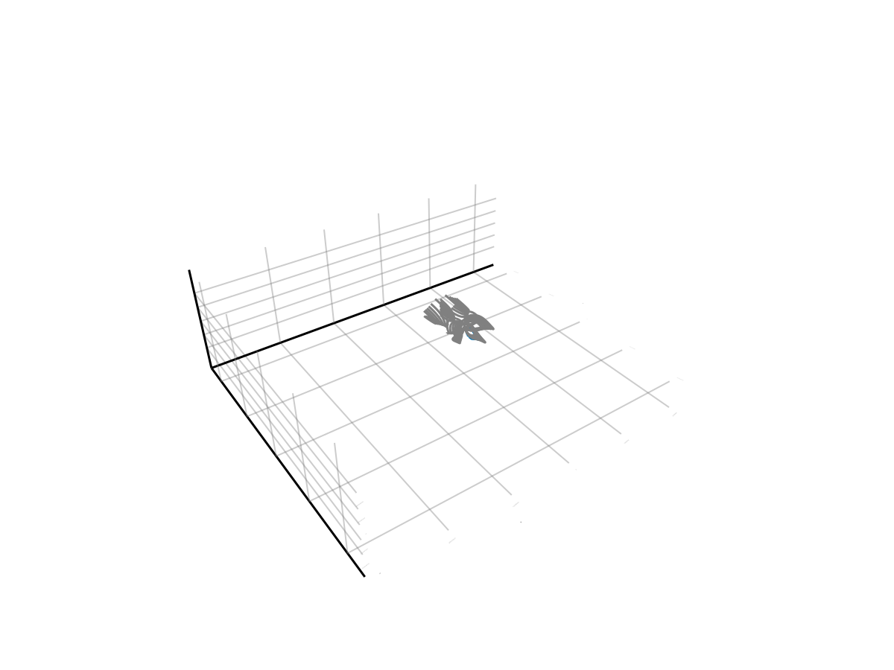

Analytical magnetosphere


This demo shows how to trace particles in a vacuum superposition of a dipolar magnetic field $\mathbf{B}_D$ with a uniform background magnetic field $\mathbf{B}_\mathrm{IMF}$. In this slightly modified dipole field, magnetic null points appear near 14 Earth's radii, and the particle orbits are also distorted from the idealized motions in Demo: magnetic dipole.
using TestParticle, OrdinaryDiffEqVerner, StaticArrays
using TestParticle: getB_dipole, getE_dipole, sph2cart, mᵢ, qᵢ, c, Rₑ
using FieldTracer
using CairoMakie
getB_superposition_constant(xu) = getB_dipole(xu) + SA[0.0, 0.0, -10e-9]
function getB_superposition_harris(xu)
Bt = 0.01 * 4e-5 # [T], 1% of the dipole field at the equator
δ = 0.1Rₑ # [m]
Bx = Bt * tanh(-xu[3] / δ)
getB_dipole(xu) + SA[Bx, 0.0, 0.0]
end
"""
Boundary condition check.
"""
function isoutofdomain(u, p, t)
rout = 18Rₑ
if (u[1]^2 + u[2]^2 + u[3]^2) < (1.1Rₑ)^2 ||
abs(u[1]) > rout || abs(u[2]) > rout || abs(u[3]) > rout
return true
else
return false
end
end
"""
Set initial conditions.
"""
function prob_func_13(prob, i, repeat)
# initial particle energy
Ek = 5e3 # [eV]
# initial velocity, [m/s]
v₀ = sph2cart(c*sqrt(1-1/(1+Ek*qᵢ/(mᵢ*c^2))^2), π/4, 0.0)
# initial position, [m]
r₀ = sph2cart(13*Rₑ, π*i, π/2)
prob = remake(prob; u0 = [r₀..., v₀...])
end
function prob_func_6(prob, i, repeat)
# initial particle energy
Ek = 4e3 # [eV]
# initial velocity, [m/s]
v₀ = sph2cart(c*sqrt(1-1/(1+Ek*qᵢ/(mᵢ*c^2))^2), π/4, 0.0)
# initial position, [m]
r₀ = sph2cart(6*Rₑ, π/2, 2π*i)
prob = remake(prob; u0 = [r₀..., v₀...])
end
# obtain field
param = prepare(getE_dipole, getB_superposition_constant)
stateinit = zeros(6) # particle position and velocity to be modified
tspan = (0.0, 2000.0)
trajectories = 2
prob = ODEProblem(trace!, stateinit, tspan, param)
ensemble_prob = EnsembleProblem(prob; prob_func = prob_func_13, safetycopy = false)
# See https://docs.sciml.ai/DiffEqDocs/stable/basics/common_solver_opts/
# for the solver options
sols = solve(ensemble_prob, Vern9(), EnsembleSerial(); reltol = 1e-5,
trajectories, isoutofdomain, dense = true, save_on = true)
### Visualization
f = Figure(fontsize = 18)
##ax = Axis3(f[1, 1],
# title = "5 keV Protons in a vacuum superposition magnetosphere",
# xlabel = "x [Re]",
# ylabel = "y [Re]",
# zlabel = "z [Re]",
# aspect = :data,
# limits = (-14, 14, -14, 14, -5, 5)
##)
ax = LScene(f[1, 1])
for (i, sol) in enumerate(sols)
l = lines!(ax, sol, idxs = (1, 2, 3), color = Makie.wong_colors()[i])
end
invRE = 1 / Rₑ
# In Makie 0.21.11, scene scaling has issues on Axis3.
##scale!(ax.scene, invRE, invRE, invRE)
# Field lines
function get_numerical_field(x, y, z, model)
bx = zeros(length(x), length(y), length(z))
by = similar(bx)
bz = similar(bx)
for i in CartesianIndices(bx)
pos = [x[i[1]], y[i[2]], z[i[3]]]
bx[i], by[i], bz[i] = model(pos)
end
bx, by, bz
end
function trace_field!(ax, x, y, z, unitscale, model = getB_superposition_constant;
rmin = 8Rₑ, rmax = 16Rₑ, nr = 8, nϕ = 4)
bx, by, bz = get_numerical_field(x, y, z, model)
zs = 0.0
dϕ = 2π / nϕ
for r in range(rmin, rmax, length = nr), ϕ in range(0, 2π-dϕ, length = nϕ)
xs = r * cos(ϕ)
ys = r * sin(ϕ)
x1, y1,
z1 = FieldTracer.trace(bx, by, bz, xs, ys, zs, x, y, z; ds = 0.1, maxstep = 10000)
lines!(ax, x1, y1, z1, color = :gray)
##lines!(ax, x1.*unitscale, y1.*unitscale, z1.*unitscale, color=:gray)
end
end
x = range(-18Rₑ, 18Rₑ, length = 50)
y = range(-18Rₑ, 18Rₑ, length = 50)
z = range(-18Rₑ, 18Rₑ, length = 50)
trace_field!(ax, x, y, z, invRE)

We now look at another superposition model of a dipole and a Harris current sheet.
param = prepare(getE_dipole, getB_superposition_harris)
stateinit = zeros(6) # particle position and velocity to be modified
tspan = (0.0, 8000.0)
trajectories = 1
prob = ODEProblem(trace!, stateinit, tspan, param)
ensemble_prob = EnsembleProblem(prob; prob_func = prob_func_6, safetycopy = false)
sols = solve(ensemble_prob, Vern9(), EnsembleSerial(); reltol = 1e-5,
trajectories, isoutofdomain, dense = true, save_on = true)
x = range(-10Rₑ, 10Rₑ, length = 50)
y = range(-5Rₑ, 5Rₑ, length = 20)
z = range(-10Rₑ, 10Rₑ, length = 50)
f = Figure(fontsize = 18)
ax = LScene(f[1, 1])
for (i, sol) in enumerate(sols)
l = lines!(ax, sol, idxs = (1, 2, 3), color = Makie.wong_colors()[i])
end
rotate!(ax.scene, Vec3f(0, 0, 1), 1.4)
trace_field!(ax, x, y, z, invRE, getB_superposition_harris; rmin = 4Rₑ, rmax = 8Rₑ, nϕ = 8)
scale!(ax.scene, 4.0, 4.0, 4.0)

This page was generated using DemoCards.jl and Literate.jl.